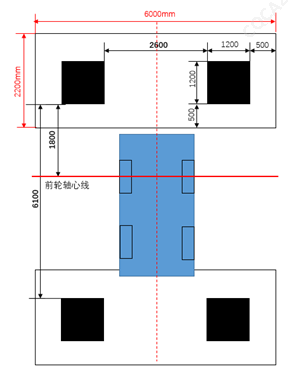

需要标定的情况：1、更换、拆卸全景摄像头；2、拼接效果不良；3、更换、拆卸全景摄像头安装对手件（前保、背门、左右外后视镜、左前/右前车门）；4、更换车机控制器。
工具：诊断仪（KT300/KT700，最新软件）
场地要求：
标定环境需在室内光线充足且均匀处进行;
标定区域尺寸大于9.5m*6m, 地面必须平整，各标定块与地面保证在同一水平面，高差不得超过1cm;
将车辆置于标定区域中央，以车辆前后的车标Logo为中间点参照物，绘制中轴线AB；
以车辆前轮与地面接触点为参照点，绘制前轮轴心线CD;
以AB、CD为参照，按左图尺寸要求布置标定块，注意标定块测量基准为黑色边缘；
标定块的边缘必须与相邻标定块的边缘保持齐平；
布置好标定块后，使用诊断仪切换前/后/左/右视图（具体操作见下一节），观察、确保每一视图中均可清晰看见两个标定块的四个角落；
标定过程中请勿移动车辆和标定块。
